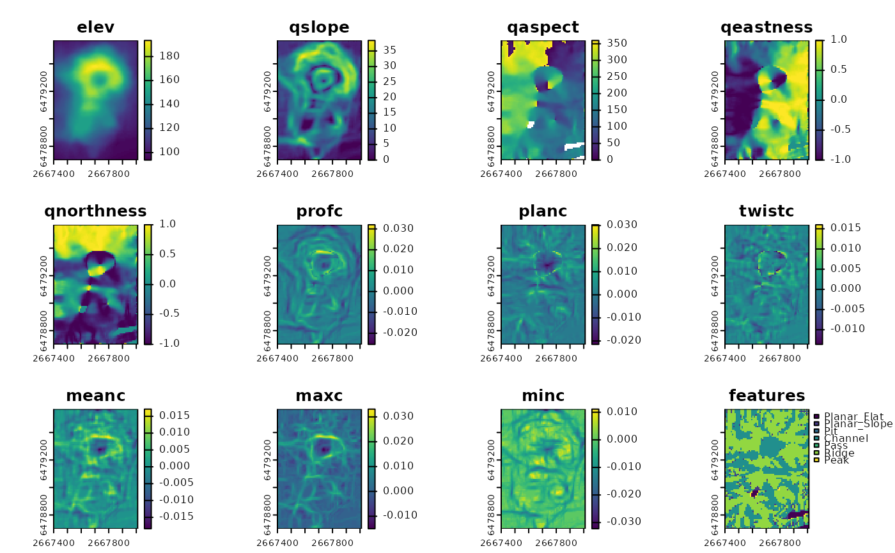
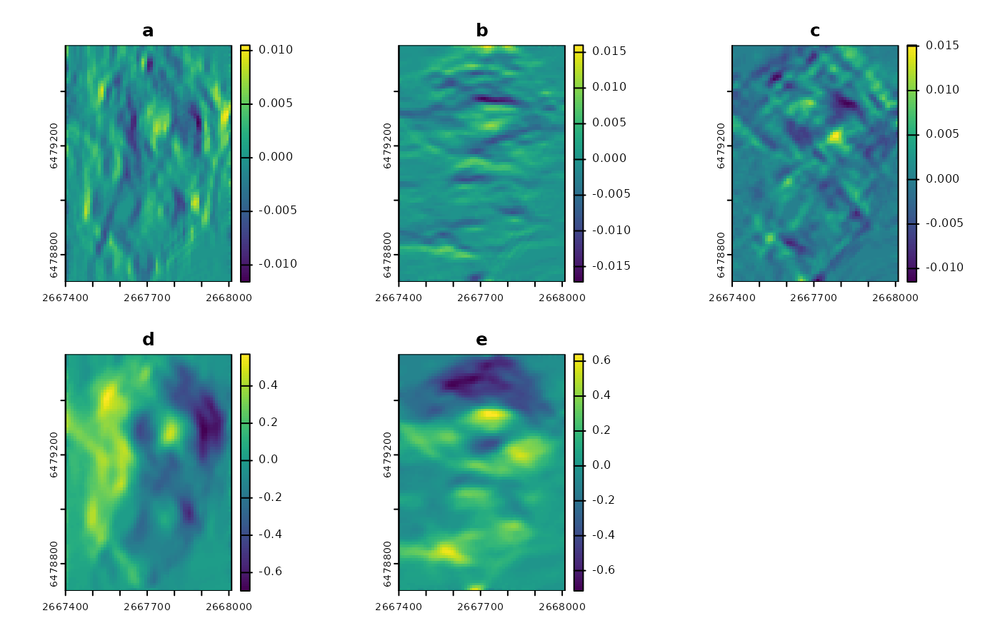

Calculates multiscale slope, aspect, curvature, and morphometric features using a local quadratic fit
Source:R/Qfit.R
Qfit.RdCalculates multiscale slope, aspect, curvature, and morphometric features of a DTM over a sliding rectangular window using a local quadratic fit to the surface (Evans, 1980; Wood, 1996).
Usage
Qfit(
r,
w = c(3, 3),
unit = "degrees",
metrics = c("elev", "qslope", "qaspect", "qeastness", "qnorthness", "profc", "planc",
"twistc", "meanc", "maxc", "minc", "features"),
slope_tolerance = 1,
curvature_tolerance = 1e-04,
outlier_quantile = c(0.01, 0.99),
na.rm = FALSE,
force_center = FALSE,
include_scale = FALSE,
mask_aspect = TRUE,
return_params = FALSE,
as_derivs = FALSE,
filename = NULL,
overwrite = FALSE,
wopt = list()
)Arguments
- r
DTM as a SpatRaster (terra) or RasterLayer (raster) in a projected coordinate system where map units match elevation/depth units (up is assumed to be north for calculations of aspect, northness, and eastness).
- w
Vector of length 2 specifying the dimensions of the rectangular window to use where the first number is the number of rows and the second number is the number of columns. Window size must be an odd number. Default is 3x3.
- unit
"degrees" or "radians".
- metrics
Character vector specifying which terrain attributes to return. The default is to return all available metrics, c("elev", "qslope", "qaspect", "qeastness", "qnorthness", "profc", "planc", "twistc", "meanc", "maxc", "minc", "features"). Slope, aspect, eastness, and northness are preceded with a 'q' to differentiate them from the measures calculated by SlpAsp() where the 'q' indicates that a quadratic surface was used for the calculation. 'elev' is the predicted elevation at the central cell (i.e. the intercept term of the regression) and is only relevant when force_center=FALSE. 'profc' is the profile curvature, 'planc' is the plan curvature, 'meanc' is the mean curvature, 'minc' is minimum curvature, and 'features' are morphometric features. See details.
- slope_tolerance
Slope tolerance that defines a 'flat' surface (degrees; default = 1.0). Relevant for the features layer.
- curvature_tolerance
Curvature tolerance that defines 'planar' surface (default = 0.0001). Relevant for the features layer.
- outlier_quantile
vector of length 2 specifying the quantiles used for filtering outliers
- na.rm
Logical indicating whether or not to remove NA values before calculations.
- force_center
Logical specifying whether the constrain the model through the central cell of the focal window
- include_scale
Logical indicating whether to append window size to the layer names (default = FALSE).
- mask_aspect
Logical. If TRUE (default), aspect will be set to NA and northness and eastness will be set to 0 when slope = 0. If FALSE, aspect is set to 270 degrees or 3pi/2 radians ((-pi/2)- atan2(0,0)+2pi) and northness and eastness will be calculated from this.
- return_params
Logical indicating whether to return Wood/Evans regression parameters (default = FALSE).
- as_derivs
Logical indicating whether parameters should be formatted as partial derivatives instead of regression coefficients (default = FALSE) (Minár et al., 2020).
- filename
character Output filename. Can be a single filename, or as many filenames as there are layers to write a file for each layer
- overwrite
logical. If TRUE, filename is overwritten (default is FALSE).
- wopt
list with named options for writing files as in writeRaster
Details
This function calculates slope, aspect, eastness, northness, profile curvature, plan curvature, mean curvature, twisting curvature, maximum curvature, minimum curvature, morphometric features, and a smoothed version of the elevation surface using a quadratic surface fit from Z = aX^2+bY^2+cXY+dX+eY+f, where Z is the elevation or depth values, X and Y are the xy coordinates relative to the central cell in the focal window, and a-f are parameters to be estimated (Evans, 1980; Minár et al. 2020; Wood, 1996). For aspect, 0 degrees represents north (or if rotated, the direction that increases as you go up rows in your data) and increases clockwise. For calculations of northness (cos(asp)) and eastness (sin(asp)), up in the y direction is assumed to be north, and if this is not true for your data (e.g. you are using a rotated coordinate system), you must adjust accordingly. All curvature formulas are adapted from Minár et al 2020. Therefore all curvatures are measured in units of 1/length (e.g. m^-1) except twisting curvature which is measured in radians/length (i.e. change in angle per unit distance), and we adopt a geographic sign convention where convex is positive and concave is negative (i.e., hills are considered convex with positive. Naming convention for curvatures is not consistent across the literature, however Minár et al (2020) has suggested a framework in which the reported measures of curvature translate to profile curvature = (kn)s, plan curvature = (kn)c, twisting curvature (Tg)c, mean curvature = kmean, maximum curvature = kmax, minimum curvature = kmin. For morphometric features cross-sectional curvature (zcc) was replaced by planc (kn)c, z''min was replaced by kmax, and z''max was replaced by kmin as these are more robust ways to measures the same types of curvature (Minár et al., 2020). Additionally, the planar feature from Wood (1996) was split into planar flat and slope depending on whether the slope threshold is exceeded or not.
References
Evans, I.S., 1980. An integrated system of terrain analysis and slope mapping. Zeitschrift f¨ur Geomorphologic Suppl-Bd 36, 274–295.
Minár, J., Evans, I.S., Jenčo, M., 2020. A comprehensive system of definitions of land surface (topographic) curvatures, with implications for their application in geoscience modelling and prediction. Earth-Science Reviews 211, 103414. https://doi.org/10.1016/j.earscirev.2020.103414
Wilson, M.F., O’Connell, B., Brown, C., Guinan, J.C., Grehan, A.J., 2007. Multiscale Terrain Analysis of Multibeam Bathymetry Data for Habitat Mapping on the Continental Slope. Marine Geodesy 30, 3-35. https://doi.org/10.1080/01490410701295962
Wood, J., 1996. The geomorphological characterisation of digital elevation models (Ph.D.). University of Leicester.
Examples
r<- rast(volcano, extent= ext(2667400, 2667400 +
ncol(volcano)*10, 6478700, 6478700 + nrow(volcano)*10),
crs = "EPSG:27200")
qmetrics<- Qfit(r, w = c(5,5), unit = "degrees", na.rm = TRUE)
plot(qmetrics)

# To get only the regression coefficients, set "metrics=c()" and "return_params=TRUE"
reg_coefs<- Qfit(r, w = c(5,5), metrics=c(), unit = "degrees", na.rm = TRUE, return_params=TRUE)
plot(reg_coefs)
